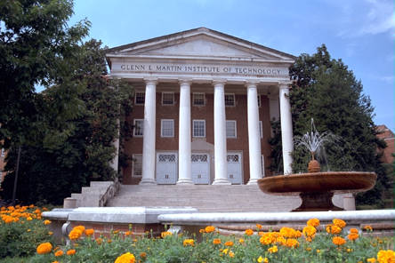

The University of Maryland, College Park is a public research university, the flagship campus of the University System of Maryland and the original 1862 land-grant institution in the State. It is one of only 62 members of the Association of American Universities,an organization composed of the leading research  universities in the United States and Canada. The University of Maryland is committed to achieving excellence as the State's primary center of research and graduate education and the institution of choice for undergraduate students of exceptional ability and promise. The University creates and applies knowledge for the benefit of the economy and culture of the State, the region, the nation, and beyond. Change window size.
As the flagship of the University System of
 Maryland, the University shares its research, educational, cultural, and technological
strengths with businesses, government, and other educational institutions. The University
advances knowledge, provides outstanding and innovative instruction, and nourishes a climate
of intellectual growth in a broad range of academic disciplines and interdisciplinary fields.
Maryland, the University shares its research, educational, cultural, and technological
strengths with businesses, government, and other educational institutions. The University
advances knowledge, provides outstanding and innovative instruction, and nourishes a climate
of intellectual growth in a broad range of academic disciplines and interdisciplinary fields.